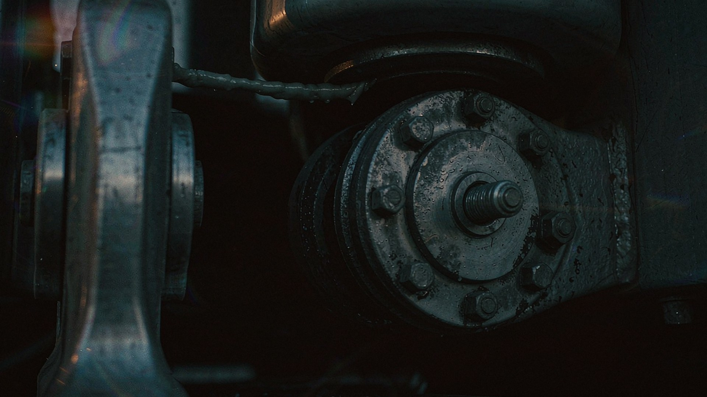
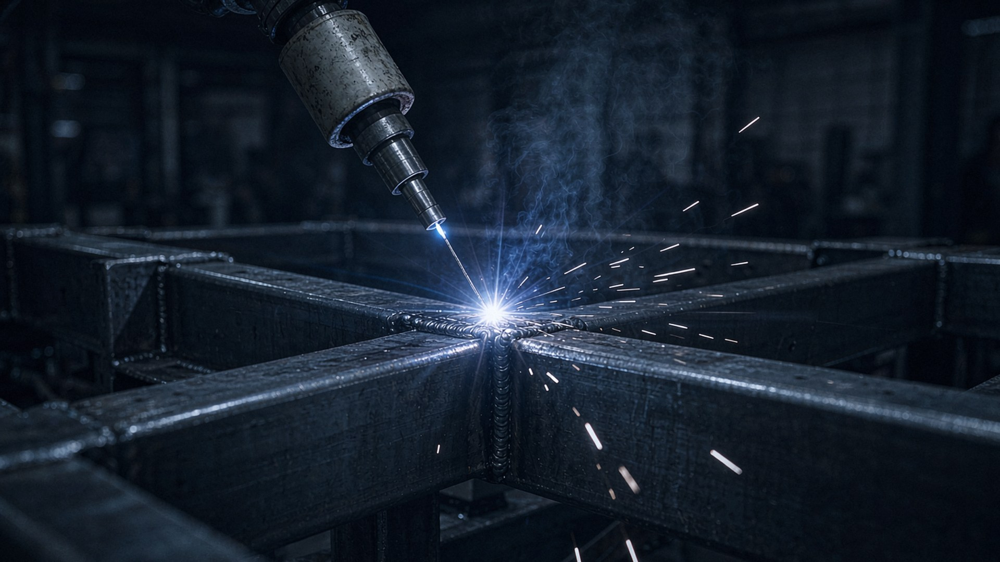
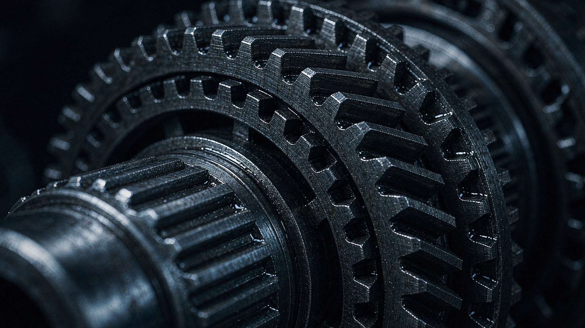
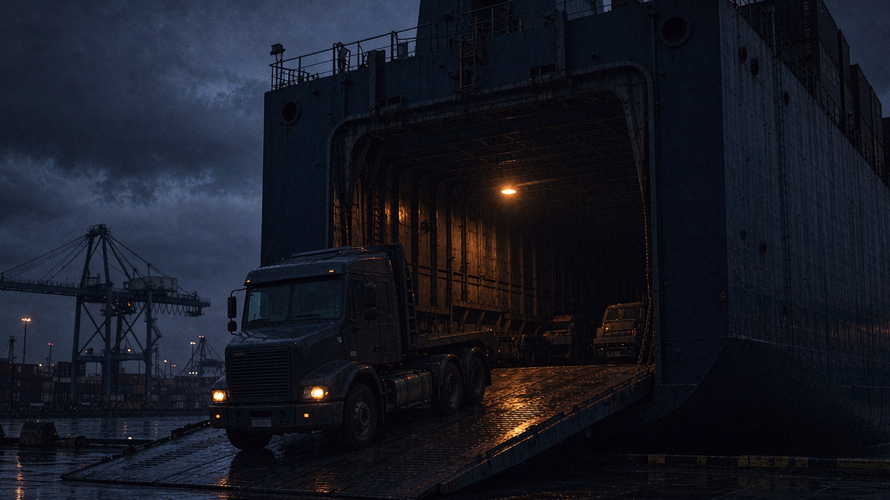
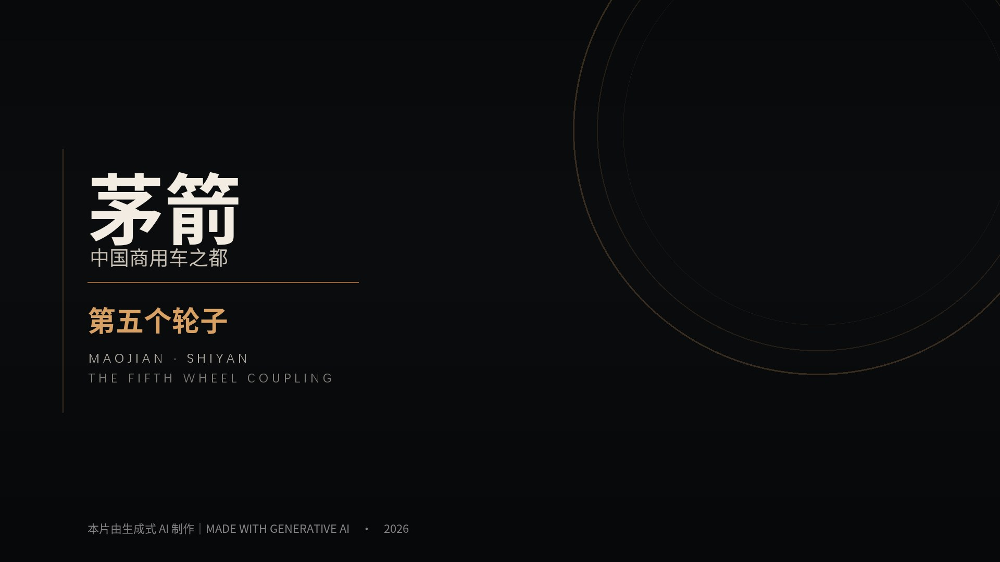

一台重卡有四只轮子走路。第五个轮子不走路——
它只做一件事：接住重量。茅箭在产业链上的位置，就是那第五个。
四只轮子负责走，那是力气；
第五个轮子负责接，那是信任。
半挂牵引车和半挂车之间，靠一个叫「牵引座」的铸钢件连起来。它不接触地面， 却要承受整节挂车的重量。行内把它叫作第五个轮子——fifth wheel coupling。
茅箭有 1,150 家汽车及零部件企业，绝大多数不造整车。它们做的正是这件事： 钢板、齿轮、同步器、桥壳、线束——把别人车上的重量，接住。
所以这条片子不拍车头，拍连接。
「这座城没有海。
于是它把海，装进了车轮。」
茅箭在秦巴山区，没有港口、没有码头。 它的出海口是四十万辆产能、是 1,150 家配套企业、是一辆辆从山口开出去的重卡。
01 立题 / 0–27s
山口的晨雾里，一辆重卡的四只轮子碾过湿沥青。旁白只说一句：一台重卡，四个轮子走路。
02 转折 / 27–53s
镜头钻到车底，沿传动轴往前；黄昏货场里，牵引车倒进挂车底下，挂车落座——全片第一声「咔」。
03 展开 / 53–107s
钢卷落垛、机器人起弧、车身合装；货架上成排的同步器、千分尺上的一格、产线屏幕上的线框车。
三个数字在这里落地：1,150 家、90%、400,000 辆产能。
04 出海 / 107–144s
出厂门，上高架，进滚装船的舱口，落到另一片大陆的公路上。
「这座城没有海。」「于是它把海，装进了车轮。」
05 收 / 144–156s
反向动作：挂车立在支腿上，牵引车开走，间隙张开。
画面在「咔」之前落黑，最后一声落在黑场上；两秒后落版。
结构上的取舍：全片没有一个人物、没有一句口号。 156 秒里旁白只占 42 秒，其余交给金属的声音。
出处原文与口径说明见仓库 docs/03-SOURCES.md；
查不到原文的数字一律没有进片子。
| # | 入点 | 时长 | 这一镜承担的论证 | 运镜 |
|---|---|---|---|---|
| 01 | 00:00.0 | 11.0s | 开局交代地理：山、路、第一辆车 | in |
| 02 | 00:11.0 | 8.0s | 「轮子先落地」——拍到物理层面 | left |
| 03 | 00:19.0 | 8.0s | 四只轮子成排，给「第五个」留出空位 | right |
| 04 | 00:27.0 | 8.0s | 钻到车底，视线开始找那个不落地的轮子 | up |
| 05 | 00:35.0 | 10.0s | 把「接住」拍成事件：牵引车倒进挂车底下 | right |
| 06 | 00:45.0 | 8.0s | 从地面仰视，重量真的从上面压下来 | up |
| 07 | 00:53.0 | 8.0s | 产业链起点：一块钢 | right |
| 08 | 01:01.0 | 8.0s | 车身成形 | in |
| 09 | 01:09.0 | 7.0s | 涂装＝出厂的体面 | left |
| 10 | 01:16.0 | 9.0s | 合装＝一台车的完成 | down |
| 11 | 01:25.0 | 8.0s | 成排的同一个零件＝「九成」的视觉论证 | in |
| 12 | 01:33.0 | 7.0s | 精度：千分尺上的那一格 | left |
| 13 | 01:40.0 | 7.0s | 数字化：智慧工厂的另一半 | in |
| 14 | 01:47.0 | 9.0s | 出厂，第一次朝向外面 | out |
| 15 | 01:56.0 | 9.0s | 山口与桥——「从一个山口出发」 | right |
| 16 | 02:05.0 | 10.0s | 第一次见海 | in |
| 17 | 02:15.0 | 9.0s | 海的那边，同一种车 | left |
| 18 | 02:24.0 | 6.0s | 反向动作：分开，才说明刚才接住过 | in |
| 19 | 02:30.0 | 6.0s | 落版 | still |
| # | 入点 | 中文 | English |
|---|---|---|---|
| 01 | 001.6s | 一台重卡，四只轮子先落地。 | Four wheels take the road first. |
| 02 | 027.4s | 第五个轮子不落地。它只做一件事——接住重量。 | The fifth never touches it. It does one thing: it carries the load. |
| 03 | 045.4s | 牵引座。行内叫它，第五个轮子。 | The coupling plate. The trade calls it the fifth wheel. |
| 04 | 054.0s | 在茅箭，一千一百五十家企业，做的是同一件事。 | In Maojian, 1,150 suppliers do the same thing. |
| 05 | 063.6s | 把别人的重量，接住。 | They carry someone else's load. |
| 06 | 086.0s | 一套同步器，国内市场九成。 | Its synchronisers hold nine tenths of the domestic market. |
| 07 | 100.4s | 四十万辆的产能，从一个山口出发。 | Capacity for 400,000 vehicles a year, out of a mountain pass. |
| 08 | 116.6s | 这座城没有海。 | This city has no sea. |
| 09 | 125.6s | 于是它把海，装进了车轮。 | So it carried the sea out on wheels. |
| 10 | 137.0s | 四只轮子带它走。第五个轮子，让它接住世界。 | Four wheels carry it. The fifth lets it hold the world. |





画面 18 张生成底图（3:2，1536×1024），逐张去掉生成器水印、放大到 2400×1600， 再用代码做窗口取景：每镜一种运镜（推、拉、横移、升），全程无一张是「静止贴图」。
调色 一套冷钢蓝灰 + 单一暖色的分级，四个预设（cool / steel / warm / dusk）， 逐点运算先对整张底本做一次，再裁窗口——结果与逐帧调色等价，但便宜一百倍。
声音 没有一条素材是拿来的：低频 drone、52 BPM 的机械脉冲、16 个事件音（牵引销、 冲压、起弧、滚装船汽笛……）全部用 numpy 合成；旁白用 TTS，−16 LUFS / 真峰 −1.5 dBTP。
单一来源 镜头、时长、运镜、调色、旁白、字幕、音效点全部写在 story.py。
分镜表由脚本生成，verify.py 反过来核对文档与片子是否一致——改时长忘了重生成文档，构建就会失败。
可验收 py -3 verify.py 跑 44 条断言：容器参数、时长区间、色彩标注、
响度与真峰、19 镜的纯色/曝光/切点、字幕安全区与局部对比、黑场与淡入淡出、旁白窗口与重叠。
退出码就是结论。
人工决策 概念、结构、每一镜的论证、数字取舍、以及三轮盲读后的修改，都是人做的； 生成器只负责底图，镜头语言由代码控制。
out/maojian.mp4 1920×1080 / 24fps / H.264 / AAC 48k / 156sout/cover.jpg 1920×1080（平台封面用）submission/01-简介.mdsubmission/02-创作说明.md（含 AI 工具清单与生成路径）docs/03-SOURCES.mdpy -3 verify.py → 退出码 0